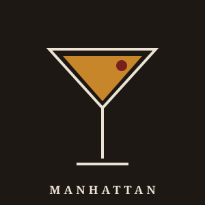

The word "cocktail" first appeared in print in 1806, defined as a mix of spirits, sugar, water, and bitters — essentially what we now call an Old Fashioned. Over two centuries it traveled from the pharmacy counter, through the back rooms of Prohibition, to today's craft bars. The three drinks below are practically that history in miniature.
